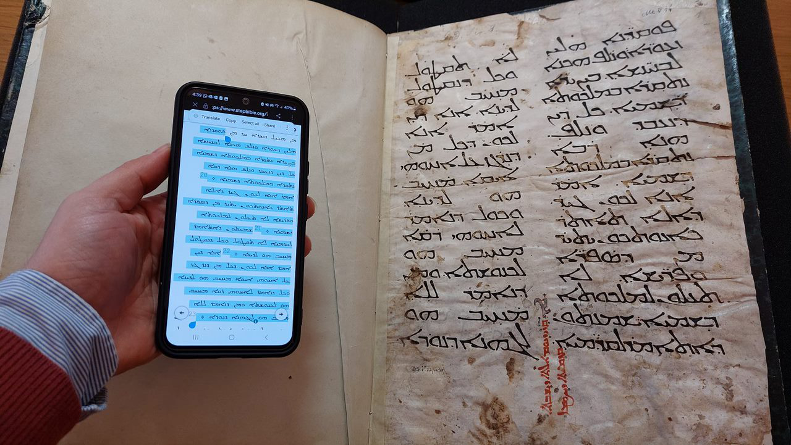
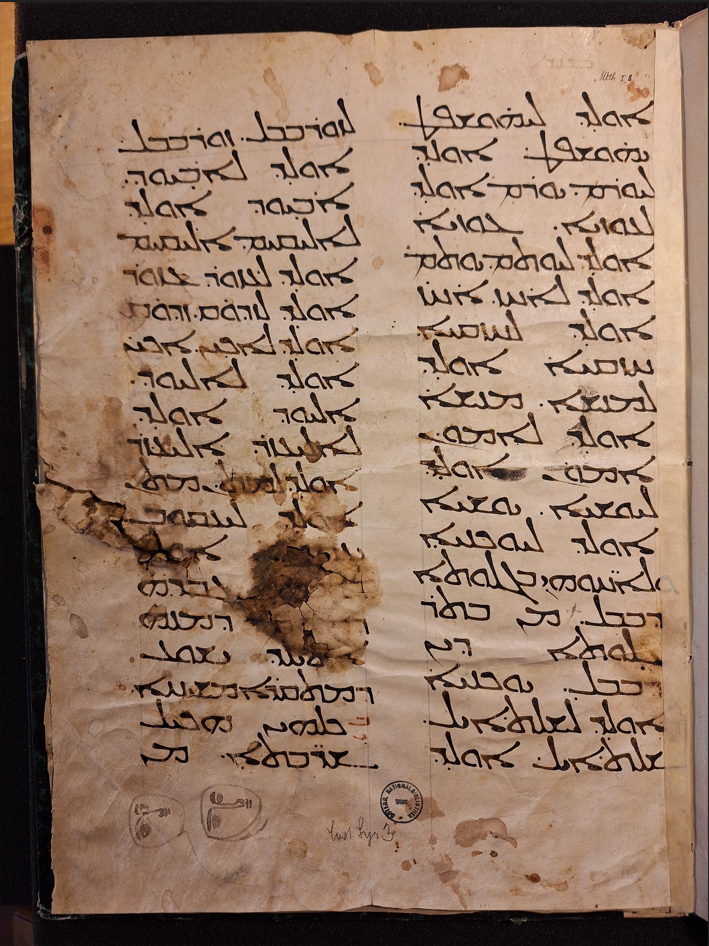
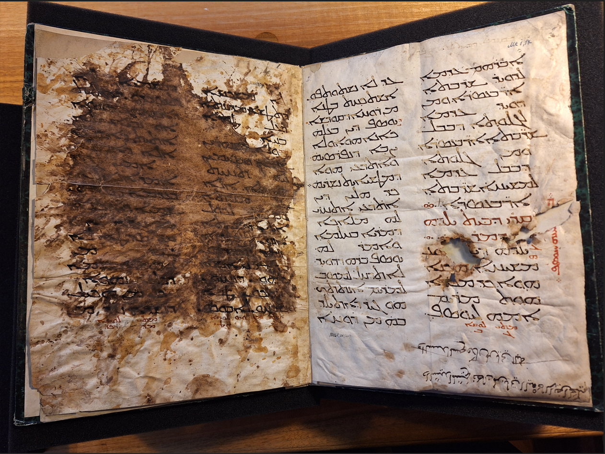
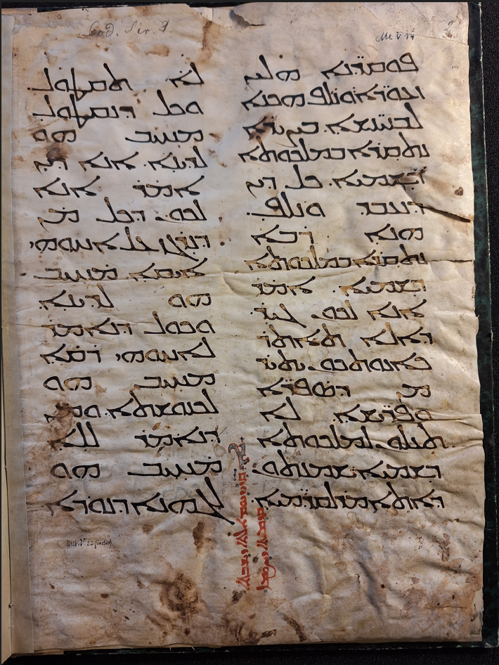

- Material: parchment
- Date: approximately 6th cent. (cfr paleographic similarities with Florence, MS 1.56)
- Dimensions: 35.5 x 26 cm
- Script type: Estrangelo
- References: Link to the available data in the Austrian National Library digital catalogue
The ancient biblical fragment in Vienna ÖNB Cod Syr 3 was among the first tests of ISP. While the content of this fragment can imply its biblical content; however, a deeper study needs a precise identification of its texts. While using Google Lens to test the ability of HTR, it could link it with the available online Syriac Gospel texts.
 Transcription: Matt 1:8-12 (fol. 1r col. a)
[8] ܐܘܠܕ ܠܝܗܘܫܦܛ (2) ܝܗܘܫܦܛ ܐܘܠܕ (3) ܠܝܘܪܡ. ܝܘܪܡ ܐܘܠܕ (4) ܠܥܘܙܝܐ. [9] ܥܘܙܝܐ (5) ܐܘܠܕ ܠܝܘܬܡ ܝܘܬܡ (6) ܐܘܠܕ ܠܐܚܙ. ܐܚܙ (7) ܐܘܠܕ ܠܚܙܩܝܐ. (8) [10] ܚܙܩܝܐ ܐܘܠܕ (9) ܠܡܢܫܐ. ܡܢܫܐ (10) ܐܘܠܕ ܠܐܡܘܢ. (11) ܐܡܘܢ ܐܘܠܕ (12) ܠܝܘܫܝܐ. [11] ܝܘܫܝܐ (13) ܐܘܠܕ ܠܝܘܟܢܝܐ (14) ܘܠܐܚ̈ܘܗܝ ܒܓܠܘܬܐ (15) ܕܒܒܠ.. [12] ܡܢ ܒܬܪ (16) ܓܠܘܬܐ ܕܝܢ (17) ܕܒܒܠ ܝܘܟܢܝܐ (18) ܐܘܠܕ ܠܫܠܬܐܝܠ. (19) ܫܠܬܐܝܠ ܐܘܠܕ
Transcription: Matt 1:12-17 (fol. 1r col. b)
ܠܙܘܪܒܒܠ. [13] ܙܘܪܒܒܠ (2) ܐܘܠܕ ܠܐܒܝܘܕ. (3) ܐܒܝܘܕ ܐܘܠܕ (4) ܠܐܠܝܩܝܡ .ܐܠܝܩܝܡ (5) ܐܘܠܕ ܠܥܙܘܪ. [14] ܥܙܘܪ (6) ܐܘܠܕ ܠܙܕܘܩ ܙܕܘܩ (7) ܐܘܠܕ ܠܐܟܝܢ. ܐܟܝܢ (8) ܐܘܠܕ ܠܐܠܝܘܕ (9) [15] ܐܠܝܘܕ ܐܘܠܕ (10) ܠܐܠܝܥܙܪ. ܐܠܝܥܙܪ (11) ܐܘܠܕ ܠܡܬܢ ܡܬܢ (12) ܐܘܠܕ ܠܝܥܩܘܒ. (13) [16] ܝܥܩܘܒ ܐܘܠܕ (14) ܠܝܘܣܦ ܓܒܪܗ (15) ܕܡܪܝܡ ܕܡܢܗ̇ (16) ܐܬܝܠܕ ܝܫܘܥ (17) ܕܡܬܩܪܐ ܡܫܝܚܐ (18) [17] ܟܠܗܝܢ ܗܟܝܠ (19) ܫܪ̈ܒܬܐ ܡܢ
Transcription: Matt 1:17-18 (fol. 1v col. a)
ܐܒܪܗܡ ܥܕܡܐ (2) ܠܕܘܝܕ ܫܪ̈ܒܬܐ (3) ܐܪ̈ܒܥܣܪܐ ܘܡܢ (4) ܕܘܝܕ ܥܕܡܐ (5) ܠܓܠܘܬܐ ܕܒܒܠ (6) ܫܪ̈ܒܬܐ ܐܪ̈ܒܥܣܪܐ (7) ܘܡܢ ܓܠܘܬܐ (8) ܕܒܒܠ ܥܕܡܐ (9) ܠܡܫܝܚܐ ܫܪ̈ܒܬܐ (10) ܐܪ̈ܒܥܣܪܐ .܀. [In marg. ܒ(ܓܠ)ܝܢܗ ܕܝܘܣܦ] (11) ܩܪܝ ܕܒܝܬ ܝܠܕܗ (12) ܕܡܪܢ ܀܀ (13) ܓ ܝ [18] ܝܠܕܗ ܕܝܫܘܥ (14) ܡܫܝܚܐ. ܗܟܢܐ (15) ܗܘܐ. ܟܕ ܡܟܪܐ (16) ܗܘܬ ܡܪܝܡ (17) ܐܡܗ ܠܝܘܣܦ [In marg. ܡܬܝ ܓ ܠܘܩܐ ܒ]
Transcription: Matt 1:18-20 (fol. 1v col. b)
ܥܕ ܠܐ ܢܫܬܘܬܦܘܢ (2) ܐܫܬܟܚܬ ܒܛܢܐ (3) ܡܢ ܪܘܚܐ ܕܩܘܕܫܐ (4) [19] ܝܘܣܦ ܕܝܢ ܒܥܠܗ̇ (5) ܟܐܢܐ ܗܘܐ ܘܠܐ (6) ܨܒ̣ܐ ܕܢܦܪܣܝܗ̇ (7) ܘܐ̇ܬܪܥܝ ܗܘܐ (8) ܕܡܛܫܝܐܝܬ ܢܫܪܝܗ̇ ܀ (9) [20] ܟܕ ܗܠܝܢ ܕܝܢ (10) ܐܬܪܥܝ܆ ܐܬܚܙܝ (11) ܠܗ ܡܠܐܟܐ (12) ܕܡܪܝܐ ܒܚܠܡܐ (13) ܘܐܡ̣ܪ ܠܗ (14) ܝܘܣܦ ܒܪܗ ܕܕܘܝܕ (15) ܠܐ ܬܕܚܠ ܠܡܣܒ (16) ܠܡܪܝܡ ܐܢܬܬܟ. (17) ܗܘ ܓܝܪ ܕܐܬܝܠܕ (18) ܒܗ̇ ܡܢ ܪܘܚܐ
Transcription: Matt 5:14-16 (fol. 2r col. a)
[14] ܠܐ ܡܫܟܚܐ (2) ܕܬܛܫܐ ܡܕܝܢܬܐ (3) ܕܥܠ ܛܘܪܐ (4) ܒܢܝܐ (5) [15] ܘܠܐ ܡܢܗܪܝܢ (6) ܫܪܓܐ ܘܣܝܡܝܢ (7) ܠܗ ܬܚܝܬ (8) ܣܐܬܐ ܐܠܐ (9) ܥܠ ܡܢܪܬܐ (10) ܘܡܢܗܪ ܠܟܘܠ (11) ܐܝܠܝܢ ܕܒܒܝܬܐ (12) ܐܢܘܢ [16] ܗܟܢܐ (13) ܢܢܗܪ ܢܘܗܪܟܘܢ (14) ܩܕܡ ܒܢܝ ܐܢܫܐ (15) (ܬܗܘܢ) ܕܢܚܙܘܢ (16) ܥܒܕܝܟܘܢ ܛ̈ܒܐ (17) ܘܢܫܒܚܘܢ ܠܐܒܘܟܘܢ
Transcription: Matt 1:17-19 (fol. 2r col. b)
ܕܒܫܡܝܐ [17] ܠܐ (2) ܬܣܒܪܘܢ ܕܐܬܝܬ (3) ܕܐܫܪܐ ܢܡܘܣܐ (4) ܐܘ ܢܒܝܐ. ܠܐ (5) ܐܬܝܬ ܕܐܫܪܐ (6) ܐܠܐ ܕܐܡܠܐ (7) [18] ܐܡܝܢ ܓܝܪ (8) ܐܡ̇ܪ ܐܢܐ ܠܟܘܢ (9) ܕܥܕܡܐ ܕܢܥܒܪܘܢ (10) ܫܡܝܐ ܘܐܪܥܐ (11) ܝܘܕ ܚܕܐ ܐܘ (12) ܚܕ ܣܪܛܐ ܠܐ (13) ܢܥܒܪ ܡܢ (14) ܢܡܘܣܐ ܥܕܡܐ (15) ܕܟܠ ܢܗܘܐ (16) [19]ܟܠ ܡ̇ܢ ܗܟܝܠ (17) ܕܢܫܪܐ ܚܕ ܡܢ
Transcription: Matt 1:19-21 (fol. 2v col. a)
[19] ܦܘܩ̈ܕܢܐ ܗܠܝܢ (2) ܙܥܘܪ̈ܐ ܘܢܠܦ ܗܟܢܐ (3) ܠܒܢܝ̈ܢܫܐ ܒܨܝܪܐ (4) ܢܬܩܪܐ ܒܡܠܟܘܬܐ (5) ܕܫܡܝܐ ܟܠ ܕܝܢ (6) ܕܢܥܒܕ ܘܢܠܦ (7) ܗܢܐ ܪܒܐ (8) ܢܬܩܪܐ ܒܡܠܟܘܬܐ (9) ܕܫܡܝܐ [20] ܐܡ̇ܪ (10) ܐܢܐ ܠܟܘܢ ܓܝܪ (11) ܕܐܠܐ ܬܐܬܪ (12) ܟܐܢܘܬܟܘܢ ܝܬܝܪ (13) ܡܢ ܕܣܦܪ̈ܐ (14) ܘܦܪ̈ܝܫܐ ܠܐ (15) ܬܥܠܘܢ ܠܡܠܟܘܬܐ (16) ܕܫܡܝܐ [21] ܫܡܥܬܘܢ (17) ܕܐܬܐܡܪ ܠܩܕܡ̈ܝܐ
Transcription: Matt 1:21-22 (fol. 2v col. b)
ܠܐ ܬܩܛܘܠ (2) ܘܟܠ ܕܢܩܛܘܠ (3) ܡܚܝܒ ܗܘ (4) ܠܕܝܢܐ [22] ܐܢܐ ܕܝܢ (5) ܐܡ̇ܪ ܐܢܐ (6) ܠܟܘܢ ܕܟܠ ܡ̇ܢ (7) ܕܢܪܓܙ ܥܠ ܐܚܘܗܝ (8) ܐܝܩܐ ܡܚܝܒ (9) ܗܘ ܠܕܝܢܐ (10) ܘܟܘܠ ܕܢܐܡܪ (11) ܠܐܚܘܗܝ ܪܩܐ (12) ܡܚܝܒ ܗܘ (13) ܠܟܢܘܫܬܐ ܘܡ̇ܢ (14) ܕܢܐܡܪ ܠܠܐ (15) ܡܚܝܒ ܗܘ (16) ܠܓܗܢܐ ܕܢܘܪܐ
Between the two columns: "Reading of Tuesday of the first week of Lent"
ܐ ܩܪ ܕܝܘܡ ܬܠܬܐ ܕܫܒܬܐ ܩܕܡܝܬܐ ܕܨܘܡܐ
Literature:
- Ishac, Ephrem A., From Vienna to the World: Launching the First Public Syriac HTR Model on Transkribus. (The Digital Orientalist, February 18, 2025).